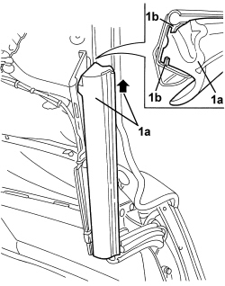
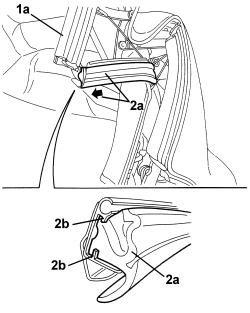
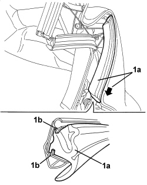

7030H37 SEAL (ONE), LEFT OR RIGHT, HOOD SIDE SEAL - R.R.
- Path
- Procedures > 70 FITTINGS > 7030 SUN ROOF/GLASS PANEL > 7030H AUTOMATICALLY OPERATED HOOD > 7030H37 SEAL (ONE), LEFT OR RIGHT, HOOD SIDE SEAL - R.R.
- Kind
- repair procedure (removal / refitting; the operation number is the code)
- Applies to
- engines: 2.2 JTS, 3.2 JTS; all production periods
- Interactive page
- https://sloeber94.github.io/elrnDB-aBrrSpdr/en/#/946003671
Applies to: engines: 2.2 JTS, 3.2 JTS; all production periods
 Removing
Removing
 Refitting
Refitting- Prepare the hood for the procedure.
Op. 0010T79 HOOD HYDRAULIC SYSTEM - DISCHARGE AND RESTORE PRESSURE
Proceed as follows to remove the front seal
Op. 7030H20 HOOD FRONT PANEL - R.R.
1. Extract front side seal (1a) by sliding it out of retainers (1b).

Applies to: engines: 2.2 JTS, 3.2 JTS; all production periods
Proceed as follows to remove the centre seal
1. Open the hood (using the electric control) until front side seal (1a) is in an almost vertical position.
2. Extract centre side seal (2a) by sliding it out of retainers (2b).

Applies to: engines: 2.2 JTS, 3.2 JTS; all production periods
Proceed as follows to remove the rear seal
- Open the hood partly, using the electric control.
1. Extract rear side seal (1a) by sliding it out of retainers (1b).

Applies to: engines: 2.2 JTS, 3.2 JTS; all production periods
Refitting
Removing- Check that the seal is not damaged.
Proceed as follows to refit the front seal:
- Insert the front side seal in its housing, engaging it in the retainers.
Op. 7030H20 HOOD FRONT PANEL - R.R.
- Check that the hood and door window work correctly.
Proceed as follows to refit the centre seal:
- Insert the centre side seal in its housing, engaging it in the retainers.
- Check that the hood and door window work correctly.
- Proceed as follows to refit the rear seal.
- Insert the rear side seal in its housing, engaging it in the retainers.
- Check that the hood and door window work correctly. The central side seal drip channel mount is adjustable. If necessary carry out the adjustment.
Topics linked from this page (3)
- 0010T79 HOOD HYDRAULIC SYSTEM - DISCHARGE AND RESTORE PRESSURE
- 7030H20 HOOD FRONT PANEL - R.R.
- 7030H33 HOOD SIDE CHANNEL (ONE), LEFT OR RIGHT - R.R.